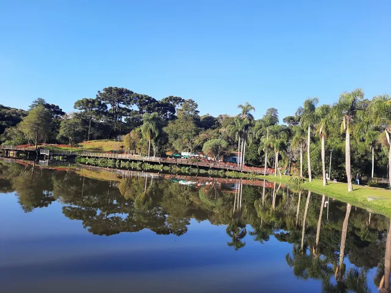
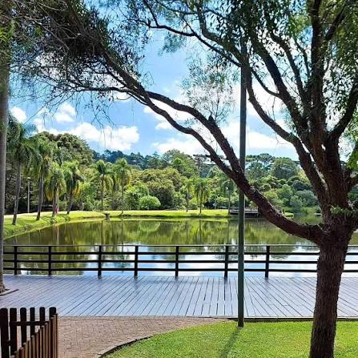

BEM VINDO AO MEU SITE
neste site vou apresentar as curiosidades sobre o parque lago azul
contexto historico
O Parque Municipal Lago Azul surgiu na década de 1930, quando o imigrante italiano Ângelo Segalla represou o Rio Ponta Grossa para movimentar um moinho de milho. O lago artificial foi criado para auxiliar nas atividades agricolas da região.com o tempo, o local tornou-se um parque particular muito frequentado por familiares para lazer e pescaria.em 2008, a prefeitura de curitiba transformou a área em parque mubicipal. o parque preserva construções historicas, como o antigo moinho, e protege a natureza local.atualmente, e um importante espaço de lazer, preservação ambiental e valorização da historia de curitiba.

historia do parque lago azul
Parque Natural Municipal Lago Azul, localizado no bairro Umbará, em Curitiba, nasceu de uma antiga propriedade rural da família Segala. Nos anos 1940, o patriarca Angelo Segala represou o Rio Ponta Grossa para mover um moinho de fubá. Entre as décadas de 1960 e 1980, o lago virou uma "praia" popular para os curitibanos.

Curiosidades do parque lago azul
O lago é artificial e nasceu na década de 1930 para movimentar um moinho de milho da família Segalla. Nos anos 60 e 80, o espaço privado virou febre e ficou conhecido como a "praia dos curitibanos". O parque possui um mirante de madeira no ponto mais alto do bosque que oferece uma vista panorâmica do lago. O antigo paiol e a casa do moinho foram tombados e restaurados para preservar a arquitetura colonial italiana. A antiga residência da família foi convertida em um bistrô cultural que atende os visitantes do parque. O local abriga uma rica fauna nativa, sendo muito procurado por observadores de aves e pescadores locais. A prefeitura comprou a área em 2007, transformando o antigo complexo de lazer privado em um parque público.